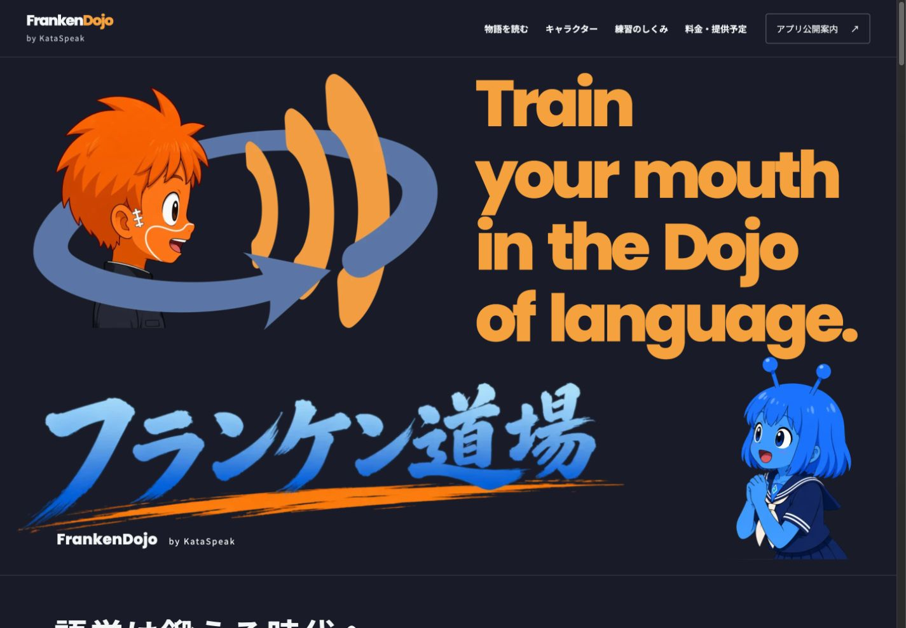

<!doctype html><html lang="ja"><meta charset="utf-8"><meta name="robots" content="noindex,nofollow"><title>最終デザイン比較</title><style>body{margin:0;padding:20px;background:#111;color:#fff;font:16px sans-serif}main{display:grid;grid-template-columns:1fr 1fr;gap:20px}img{width:100%}h2{font-size:18px}.hero-crop{aspect-ratio:1.73;overflow:hidden}.hero-crop img{transform:translateY(-9.2%)}</style><main><section><h2>指定参考画像（5300 × 3070）</h2></section><section><h2>実装ヒーロー（1440px / 同じ領域）</h2><div class="hero-crop"></div></section></main></html>